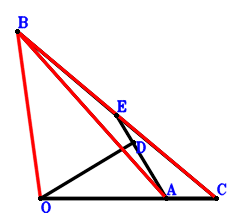

Exercise 3： Let D be the centroid of △CBA. E is the midpoint of BC. OD⊥EA. \(6 OA^{2}=CA^{2} + 3 OC^{2}\). Prove that \(2 BC^{2}=BA^{2} + 3 OB^{2}\).

\(\because \) D is the centroid of △CBA \(\therefore \small\overrightarrow{AD}=\dfrac{\small\overrightarrow{AB}}{3} + \dfrac{\small\overrightarrow{AC}}{3}\).\(\because \) E is the midpoint of BC \(\therefore \small\overrightarrow{AE}=\dfrac{\small\overrightarrow{AB}}{2} + \dfrac{\small\overrightarrow{AC}}{2}\).\(\because \) OD⊥EA \(\therefore \small\overrightarrow{EA} \cdot \small\overrightarrow{OD}=- \small\overrightarrow{AE} \cdot \left(\small\overrightarrow{AD} - \small\overrightarrow{AO}\right)=- \left(\dfrac{\small\overrightarrow{AB}}{2} + \dfrac{\small\overrightarrow{AC}}{2}\right) \cdot \left(\dfrac{\small\overrightarrow{AB}}{3} + \dfrac{\small\overrightarrow{AC}}{3} - \small\overrightarrow{AO}\right)=- \dfrac{\small\overrightarrow{AB}^{2}}{6} - \dfrac{\small\overrightarrow{AB} \cdot \small\overrightarrow{AC}}{3} + \dfrac{\small\overrightarrow{AB} \cdot \small\overrightarrow{AO}}{2} - \dfrac{\small\overrightarrow{AC}^{2}}{6} + \dfrac{\small\overrightarrow{AC} \cdot \small\overrightarrow{AO}}{2}=0\) . . . . . . \(①\)\(\because \) \(6 OA^{2}=CA^{2} + 3 OC^{2}\) \(\therefore \small\overrightarrow{CA}^{2} - 6 \small\overrightarrow{OA}^{2} + 3 \small\overrightarrow{OC}^{2}=\small\overrightarrow{AC}^{2} - 6 \small\overrightarrow{AO}^{2} + 3 \left(\small\overrightarrow{AC} - \small\overrightarrow{AO}\right)^{2}=4 \small\overrightarrow{AC}^{2} - 6 \small\overrightarrow{AC} \cdot \small\overrightarrow{AO} - 3 \small\overrightarrow{AO}^{2}=0\) . . . . . . \(②\)In conclusion, \(\small\overrightarrow{BA}^{2} - 2 \small\overrightarrow{BC}^{2} + 3 \small\overrightarrow{OB}^{2}=\small\overrightarrow{AB}^{2} - 2 \left(- \small\overrightarrow{AB} + \small\overrightarrow{AC}\right)^{2} + 3 \left(\small\overrightarrow{AB} - \small\overrightarrow{AO}\right)^{2}=2 \small\overrightarrow{AB}^{2} + 4 \small\overrightarrow{AB} \cdot \small\overrightarrow{AC} - 6 \small\overrightarrow{AB} \cdot \small\overrightarrow{AO} - 2 \small\overrightarrow{AC}^{2} + 3 \small\overrightarrow{AO}^{2}=-12\cdot①-②=0\), that is, \(2 BC^{2}=BA^{2} + 3 OB^{2}\).